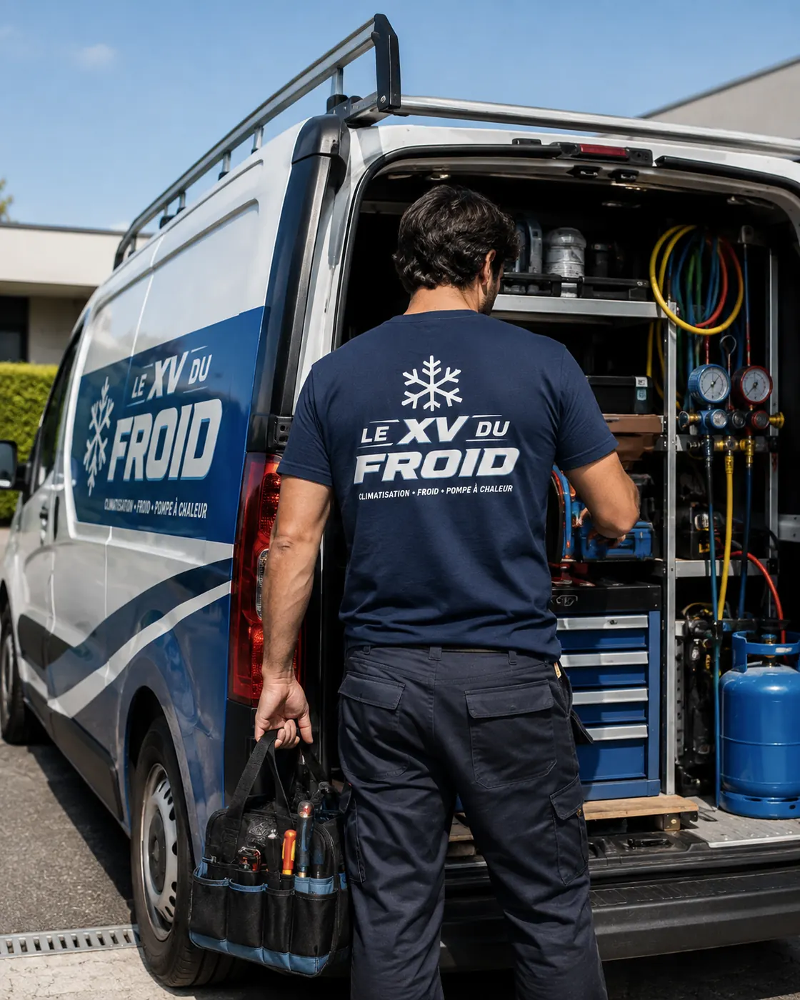

Dépannage climatisation Plaisir · 78370
Dépannage climatisation à Plaisir : elle démarre, puis s’arrête toute seule
Une clim qui s’éteint seule au bout de dix minutes n’est pas capricieuse : elle se protège. À Plaisir, nous cherchons quelle sécurité a déclenché et pourquoi, plutôt que de relancer l’appareil en espérant que ça tienne.
- Sécurité déclenchée, cause trouvée
- Réparation expliquée avant devis
- Plaisir et communes voisines

Arrêt intempestif
Une panne qui parle, si on sait l’écouter.
Les climatiseurs modernes surveillent en permanence leur température, leur pression et leur courant. Quand l’un sort de la plage permise, la machine s’arrête d’elle-même pour ne pas s’abîmer. Ce n’est pas la panne, c’est le symptôme.
La vraie question est de savoir quelle sécurité a coupé. Un voyant clignotant, un code sur l’écran ou le nombre de clignotements donne souvent la réponse. Notez-le avant de couper l’appareil.
Le délai entre le démarrage et l’arrêt compte aussi : dix minutes ou une heure ne désignent pas les mêmes causes.
Les sécurités
Quatre raisons classiques d’un arrêt automatique
On les rencontre régulièrement dans les appareils de la région.
- Condensats : un bac plein ou un tuyau bouché active le flotteur et coupe la machine.
- Température du groupe : un groupe extérieur étouffé chauffe et déclenche sa protection.
- Pression : un manque de fluide ou un circuit obstrué fait chuter ou monter la pression.
- Courant : un compresseur qui force ou un condensateur fatigué dépasse l’intensité permise.
Ce qu’on contrôle
Dépannage clim Plaisir : l’ordre des vérifications
Pour un dépannage clim Plaisir de ce type, on commence par le plus simple : filtre, dégagement du groupe, évacuation. Ces trois points expliquent plus de la moitié des arrêts qui reviennent à date fixe.
Si rien ne saute aux yeux, on passe aux mesures : intensité absorbée, températures d’entrée et de sortie, pression du circuit. Elles montrent si le problème est électrique, thermique ou frigorifique.
On évite de forcer l’appareil à redémarrer plusieurs fois. Chaque tentative use un peu plus un compresseur déjà sous contrainte.

Réparation climatisation Plaisir : ce qui se règle sur place
Un tuyau d’évacuation bouché, un filtre colmaté, un ventilateur de groupe encrassé : ces causes se règlent dans la foulée, avec les outils du véhicule.
Un condensateur ou une sonde défectueuse se remplace dès que la pièce est disponible. Une fuite de fluide, en revanche, demande une recherche puis une réparation du circuit, qui prend plus de temps.
- Évacuation et filtre dégagés
- Groupe extérieur nettoyé
- Pièces remplacées si nécessaire
À ne pas faire
Ce qui aggrave un arrêt automatique
Réarmer en boucle est la mauvaise idée la plus courante. Un disjoncteur qui saute une première fois est un avertissement, deux fois est un diagnostic.
Ne contournez jamais une sécurité, même provisoirement. Elle est là pour éviter qu’un compresseur ne grille ou qu’une surchauffe n’aille plus loin.
Si vous voyez de la glace sur la tuyauterie ou de l’eau au sol, notez-le : ce sont des indices précieux.
Un arrêt automatique est un signal. On cherche la cause, on ne supprime pas la protection.
Plaisir en pratique
Maisons, résidences, locaux d’activité
À Plaisir, on rencontre des pavillons avec groupe dans le jardin, des résidences avec toits techniques et des petits locaux d’activité. Les causes d’arrêt varient : feuilles et pollen dans les maisons, accès limité dans les résidences, charges thermiques fortes dans les locaux.
Dites-nous au téléphone de quel cas il s’agit. Cela nous aide à préparer le bon matériel.
Questions
Clim qui s’arrête seule à Plaisir : vos questions
Ma clim s’éteint après dix minutes, est-ce le gaz ?
Possible, mais pas le premier suspect. Un filtre bouché ou une évacuation obstruée donne le même symptôme. On vérifie ces points avant de parler de fluide.
Peut-on faire un dépannage climatisation Plaisir le jour même ?
Cela dépend de l’agenda. Appelez le matin, nous regardons ce qui est possible sans promesse irréaliste.
Pourquoi la clim se coupe-t-elle quand il fait très chaud ?
Parce que le groupe extérieur dissipe moins bien la chaleur. Une protection thermique s’active alors. Un nettoyage du groupe règle souvent le problème.
Dois-je faire réparer ou remplacer une vieille clim qui se coupe ?
Cela dépend de l’âge et de la cause. Un condensateur se remplace sans débat ; un compresseur usé sur un appareil ancien se discute.
Que dire au technicien au téléphone ?
La marque, le code affiché, la durée avant l’arrêt, et si l’eau coule ou la glace apparaît. Ces détails orientent la visite.
Votre technicien peut-il venir pour une résidence ?
Oui, à condition que l’accès au groupe extérieur soit prévu. Prévenez le gardien ou le syndic avant.
Dans votre ville
Les autres services à Plaisir
Un besoin différent, une page différente : dépannage, entretien, installation ou urgence.
Autour de chez vous
Dépannage de climatisation dans les villes voisines
Si vous êtes à la limite de deux communes, lisez aussi la page d’à côté.
- Dépannage climatisation Mantes-la-Jolie : réversible qui ne chauffe plus
- Climatisation Les Mureaux : réparation de climatiseur mural
- Climatisation Poissy : dépannage et réparation climatiseur
- Dépannage climatisation Conflans-Sainte-Honorine : manque de gaz, fuite et recharge
- Dépannage climatisation Versailles : fuite d’eau et pannes courantes
- Dépannage climatisation Sartrouville : la clim souffle tiède, tour des causes
- Dépannage climatisation Houilles : locataire, qui paie et que dire au propriétaire
- Dépannage climatisation Chatou : bruits, vibrations et ventilateur qui racle
- Dépannage climatisation Saint-Germain-en-Laye : code erreur et pannes courantes
À côté
D’autres besoins dans les communes voisines
Chaque ville a ses pages.
Nos services
Aller plus loin sur la climatisation
Les pages du site qui complètent celle-ci : services, guides pratiques et devis.
- Dépannage climatisation en Île-de-France
- Installation de climatisation : split, gainable, monobloc
- Entretien de climatisation et de clim réversible
- Demander un devis climatisation gratuit
- Toutes nos zones d’intervention
- Quelle puissance de climatisation choisir ?
- Ma climatisation ne refroidit plus : que faire ?
Où on intervient
Plaisir et communes voisines
Le centre-ville et les quartiers autour de la gare de Plaisir-Grignon, ainsi que Les Clayes-sous-Bois, Villepreux, Thiverval-Grignon et Élancourt.
Décrire la panneÀ lire aussi
Autour de Plaisir
Pages voisines : climatisation Élancourt, climatisation Trappes, climatisation Rambouillet.
Transparence
Un devis clair avant toute intervention.
Vous savez ce qui est prévu, pourquoi c’est nécessaire et à quel tarif avant que le technicien commence. Puis contrôles et essais avant son départ.